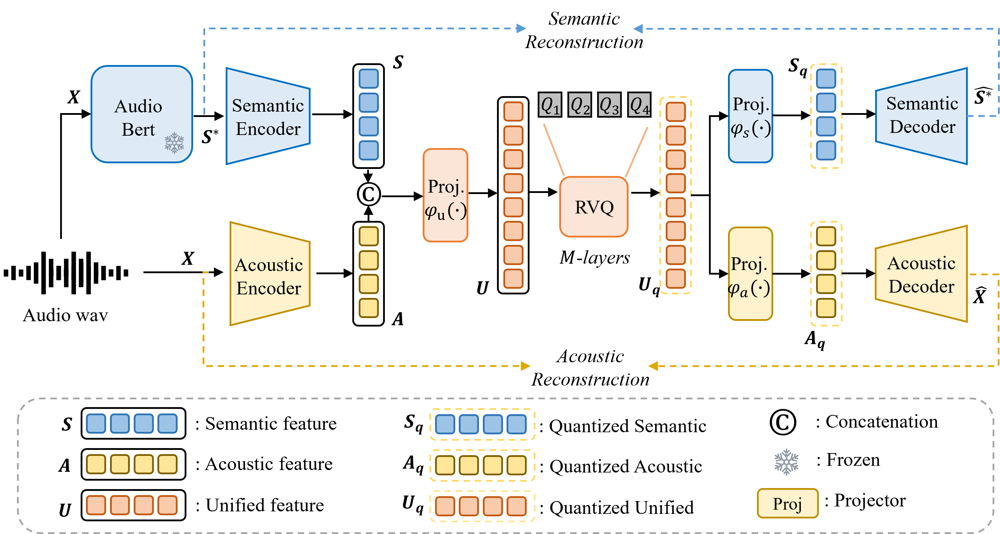

X-Codec: Unified Audio Tokenizer for Audio Language Model
Abstract
Audio tokenization is crucial for effective audio processing and traditionally di vides into two primary categories: semantic and acoustic tokenization. Semantic tokenizers such as HuBERT and Wav2Vec-BERT utilize clustering algorithms like K-Means to transform features into discrete tokens. On the other hand, acoustic tokenizers rely on structures like Residual Vector Quantizers (RVQ) and encoder- decoder models to reconstruct audio waveforms. This traditional bifurcation presents significant challenges, most notably the complexity introduced by the two- stage audio generation process. In this process, semantic tokens are first converted into acoustic tokens, which then generate the waveform. This multistage approach is not only sub-optimal because of inconsistent learning targets for two stages but also increases the potential for error accumulation. In this work, we propose a unified tokenizer, X-Codec, that integrates both semantic and acoustic features into a single framework. The proposed X-Codec simplifies the audio generation process by allowing for a decoder-only GPT-style pipeline. By merging the advantages of both token types, as demonstrated by experiments, the proposed tokenizer shows strong capablities in both semantic understanding and audio reconstruction quality, and also unlocks the potential of GPT-style autoregressive methods in the audio domain, previously hindered by previous audio codec focused solely on acoustic features.
Contribution

Figure 1: The overview of the X-Codec architecture. The model is designed to unify acoustic and semantic tokens using a universal structure comprising three components: a semantic reconstruction network, an acoustic reconstruction network, and a Bottleneck Vector Quantizer (Bot-VQ)

Figure 2: Performance of semantic representation on ARCH benchmark. It comprehensively evaluation the system ability of audio understanding.
Waveform Reconstruction
We randomly selected 1000 samples from LibriTTS, MTT, and ESC-50 to represent the corresponding domains and calculated the differences between the original and reconstructed audio for each codec.
We show the evaluation metrics score using ViSQOL ↑ , Mel distance ↓ , and STFT distance ↓.
Samples from LibriTTS (Speech)
↔️ Scroll horizontally to view the full table.
| ID | Original | X-Codec(Ours) | SpeechTokenizer | Encodec-uniaudio | Encodec(16khz) | DAC(16khz) | X-Codec(Ours) | SpeechTokenizer | Encodec-uniaudio | Encodec(16khz) | DAC(16khz) |
|---|---|---|---|---|---|---|---|---|---|---|---|
| Quantizer num | / | 1 | 1 | 1 | 1 | 1 | 12 | 8 | 8 | 8 | 12 |
| Bit rate | / | 0.5 kbps | 0.5 kbps | 0.5 kbps | 0.75 kbps | 0.31 kbps | 6.0 kbps | 4.0 kbps | 4.0 kbps | 6.0 kbps | 3.75 kbps |
| ViSQOL ↑ | / | 3.34 | 2.42 | 2.63 | 3.38 | 2.36 | 4.23 | 3.39 | 4.12 | 4.26 | 3.17 |
| Mel distance ↓ | / | 0.95 | 1.42 | 1.52 | 1.33 | 1.55 | 0.65 | 0.66 | 1.03 | 1.98 | 0.45 |
| STFT distance ↓ | / | 0.80 | 1.07 | 1.48 | 0.66 | 1.10 | 0.63 | 0.63 | 1.10 | 0.77 | 0.54 |
| 1 | |||||||||||
| 2 | |||||||||||
| 3 | |||||||||||
| 4 | |||||||||||
| 5 | |||||||||||
| 6 | |||||||||||
| 7 | |||||||||||
| 8 | |||||||||||
| 9 | |||||||||||
| 10 |
Samples from MagnaTagATune (Music)
↔️ Scroll horizontally to view the full table.
| ID | Original | X-Codec(Ours) | SpeechTokenizer | Encodec-uniaudio | Encodec(16khz) | DAC(16khz) | X-Codec(Ours) | SpeechTokenizer | Encodec-uniaudio | Encodec(16khz) | DAC(16khz) |
|---|---|---|---|---|---|---|---|---|---|---|---|
| Quantizer num | / | 1 | 1 | 1 | 1 | 1 | 12 | 8 | 8 | 8 | 12 |
| Bit rate | / | 0.5 kbps | 0.5 kbps | 0.5 kbps | 0.75 kbps | 0.31 kbps | 6.0 kbps | 4.0 kbps | 4.0 kbps | 6.0 kbps | 3.75 kbps |
| ViSQOL ↑ | / | 3.97 | 3.23 | 4.09 | 3.23 | 2.23 | 4.37 | 4.10 | 4.47 | 4.04 | 4.55 |
| Mel distance ↓ | / | 3.7 | 3.6 | 5.0 | 5.0 | 3.4 | 11.6 | 5.1 | 28.2 | 19.6 | 19.6 |
| STFT distance ↓ | / | 1.07 | 1.62 | 1.61 | 1.12 | 1.48 | 0.81 | 1.24 | 1.22 | 0.96 | 0.72 |
| 1 | |||||||||||
| 2 | |||||||||||
| 3 | |||||||||||
| 4 | |||||||||||
| 5 | |||||||||||
| 6 | |||||||||||
| 7 | |||||||||||
| 8 | |||||||||||
| 9 | |||||||||||
| 10 |
Samples from ESC-50 (Audio events)
↔️ Scroll horizontally to view the full table.
| ID | Original | X-Codec(Ours) | SpeechTokenizer | Encodec-uniaudio | Encodec(16khz) | DAC(16khz) | X-Codec(Ours) | SpeechTokenizer | Encodec-uniaudio | Encodec(16khz) | DAC(16khz) |
|---|---|---|---|---|---|---|---|---|---|---|---|
| Quantizer num | / | 1 | 1 | 1 | 1 | 1 | 12 | 8 | 8 | 8 | 12 |
| Bit rate | / | 0.5 kbps | 0.5 kbps | 0.5 kbps | 0.75 kbps | 0.31 kbps | 6.0 kbps | 4.0 kbps | 4.0 kbps | 6.0 kbps | 3.75 kbps |
| ViSQOL↑ | / | 4.08 | 3.64 | 4.17 | 4.10 | 3.37 | 4.41 | 4.33 | 4.47 | 4.41 | 4.53 |
| Mel distance ↓ | / | 4.08 | 3.64 | 4.17 | 4.10 | 3.73 | 4.41 | 4.33 | 4.37 | 4.41 | 4.53 |
| STFT distance ↓ | / | 1.00 | 1.07 | 1.65 | 1.24 | 1.60 | 0.83 | 1.18 | 1.40 | 1.11 | 0.73 |
| 1 | |||||||||||
| 2 | |||||||||||
| 3 | |||||||||||
| 4 | |||||||||||
| 5 | |||||||||||
| 6 | |||||||||||
| 7 | |||||||||||
| 8 | |||||||||||
| 9 | |||||||||||
| 10 |
For more audio samples, please refer to the github page repo.